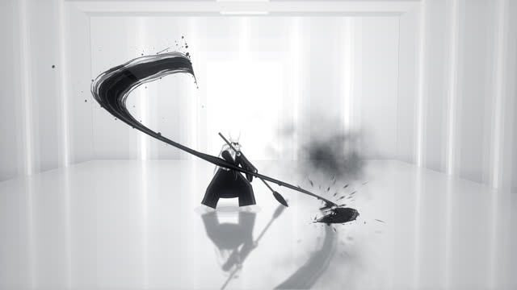
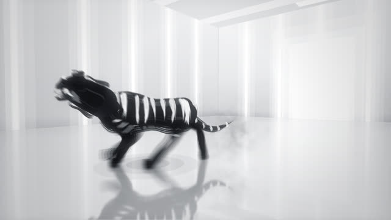
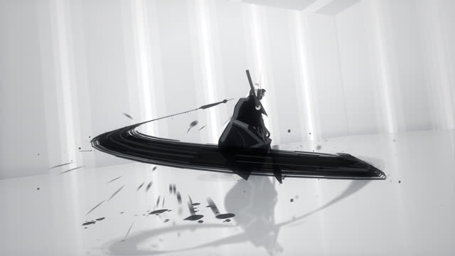
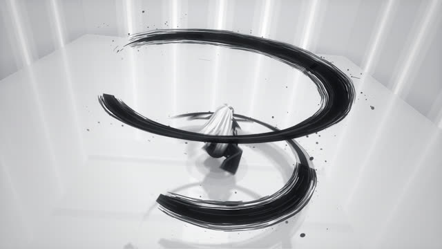
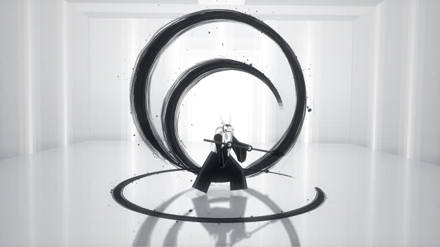
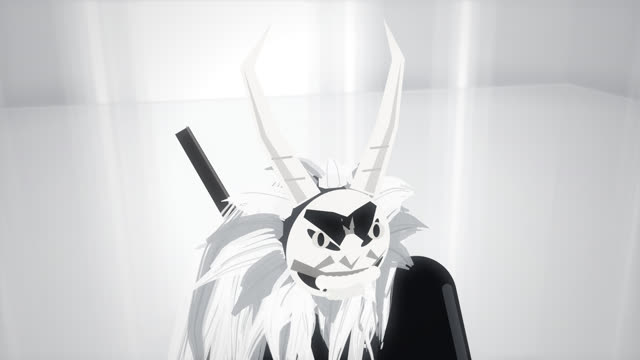
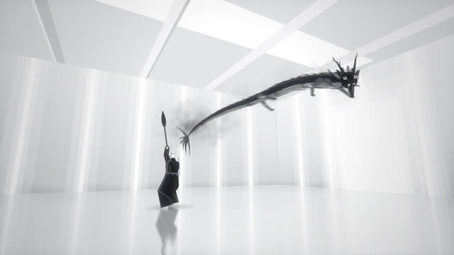
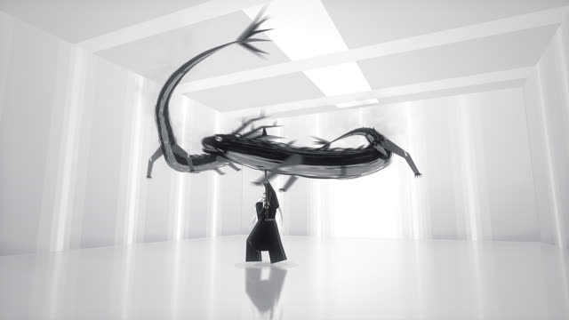
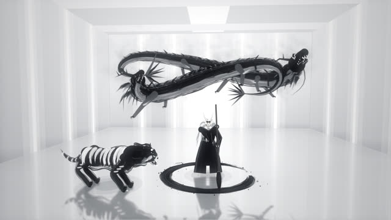

작업 흐름
- 입력
- 주제 하나(용과 호랑이, 늑대와 학, 잉어, 불사조 …). 레퍼런스 영상이 있으면 그 스틸과 소리
- 브리프
- 레퍼런스 프롬프트의 구조에 주제를 채운
BRIEF.md: 소환사의 가면, 땅의 짐승과 하늘의 짐승, 박자, 마지막 구도, 품질 기준과 피해야 할 것 - 샷 표
- 첫 획 → 짐승이 튀어나옴 → 바닥 쓸기 → 고리 → 큰 원 → 짐승의 걸음 → 근접과 휘두름 → 솟는 획이 용이 됨 → 똬리 → 마지막 구도의 8–11샷
- 그림
- 직접 만든 3D 투영 위의 하얀 스튜디오와 바닥 반사, 붓끝이 지나간 길이 곧 먹 획(털 64가닥의 마른 붓 결 · 튀는 먹), 관절과 옷자락과 흰 머리가 따라 움직이는 소환사, 3D 뼈대에 같은 붓으로 칠한 짐승
- 확인
- 무작위 스틸을 브리프 기준으로 채점하는 검토, 콘택트 시트, 모든 샷 · 빈 프레임 · 결정성 · 악보 검사
- 출력
- 30fps 1920×1080 MP4(모션 블러 · 북 · 붓 소리 · 포효 포함), ♪ 버튼으로 소리까지 재생하는 라이브 페이지, 엔진째 넣은 HTML 한 파일
cd ink-summoning/examples/dragon-tiger
node ../../scripts/check.mjs index.html
node ../../scripts/render.mjs index.html --sheet 20 --scale .5 --q mb=1
node ../../scripts/score.mjs score.js --dur 21.1 --out out/film.wav
node ../../scripts/render.mjs index.html --workers 4 --audio out/film.wav
node ../../scripts/new-film.mjs ../../../my-film요구 사항: Node + Playwright Chromium, ffmpeg. 네트워크와 GPU가 필요 없습니다(CPU에서 모션 블러를 넣은 1080p 한 프레임이 워커 하나에 약 1.2초, 21초 영상을 워커 4개로 약 3분 반). 단계별 순서는 SKILL.md에 있습니다.
샘플
예제 「龍虎 · Dragon and Tiger」의 열 샷과, 같은 엔진으로 주제만 바꾼 시작 템플릿입니다. 카드를 누르면 새 탭에서 그 순간에 멈춘 장면이 열리고, 브라우저가 먹 한 가닥부터 직접 그립니다.
龍虎 · Dragon and Tiger 16:9 · 21초 · 10샷
도깨비 가면을 쓴 소환사가 붓을 휘두르자 먹이 호랑이가 되어 렌즈로 달려들고, 먹의 고리가 소환사를 감싸고, 솟아오른 획이 용이 되어 머리 위를 돕니다.









Wolf and Cranes 템플릿 · 11초 · 5샷
같은 엔진으로 주제만 바꾼 출발점입니다. 여우 가면의 소환사가 그은 획이 늑대가 되고, 위로 던진 획 셋이 학이 됩니다.
실제 작품
이 레포에서 만든 스킬입니다. Ayesha가 X에 올린 16초 영상(Seedance 2.5로 만든, 도깨비 가면을 쓴 무사가 거대한 붓으로 그린 먹이 호랑이와 용이 되는 영상)과 함께 올린 프롬프트가 출발점입니다. 그 영상은 AI 영상 모델이 만든 것이라, 이 스킬은 프롬프트와 화면의 문법(하얀 스튜디오, 먹 획, 붓에서 짐승으로, 컷 리듬, 마지막 구도)만 가져오고 그림은 직접 만든 엔진이 그립니다. 예제의 소환사, 짐승, 안무, 음악은 모두 이 레포의 것이고, 용과 호랑이는 오래된 수묵화의 짝(龍虎圖)입니다.
링크
- SKILL.md 워크플로
- 폴더 lib · scripts · templates · references · examples
- README.md 빠른 시작
- references/BRIEF.md 레퍼런스 프롬프트 원문, 영상의 샷 분석, 주제를 채우는 브리프 틀, 스틸 검토 기준
- references/STORY.md 주제별 캐스팅 표, 10박자 샷 문법, 컷 리듬
- references/LOOK.md 레퍼런스처럼 보이게 하는 것: 스튜디오, 먹 획, 연기, 소환사, 짐승, 색감
- references/KIT.md 필름 · 먹 · 소환사 · 짐승 · 악보 API
- references/LESSONS.md 겪은 문제와 해결